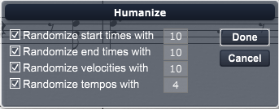

Choose this command to humanize selected notes, that is to alter their start times, durations, and velocities to give a human playback feel. When you choose the Humanize command, Overture produces the Humanize dialog box.

To humanize selected notes and tempos:
Overture humanizes the selected notes and tempos in your score.
This command affects start and end times of notes only, not the notated note value. To change note value, see Transcribe.